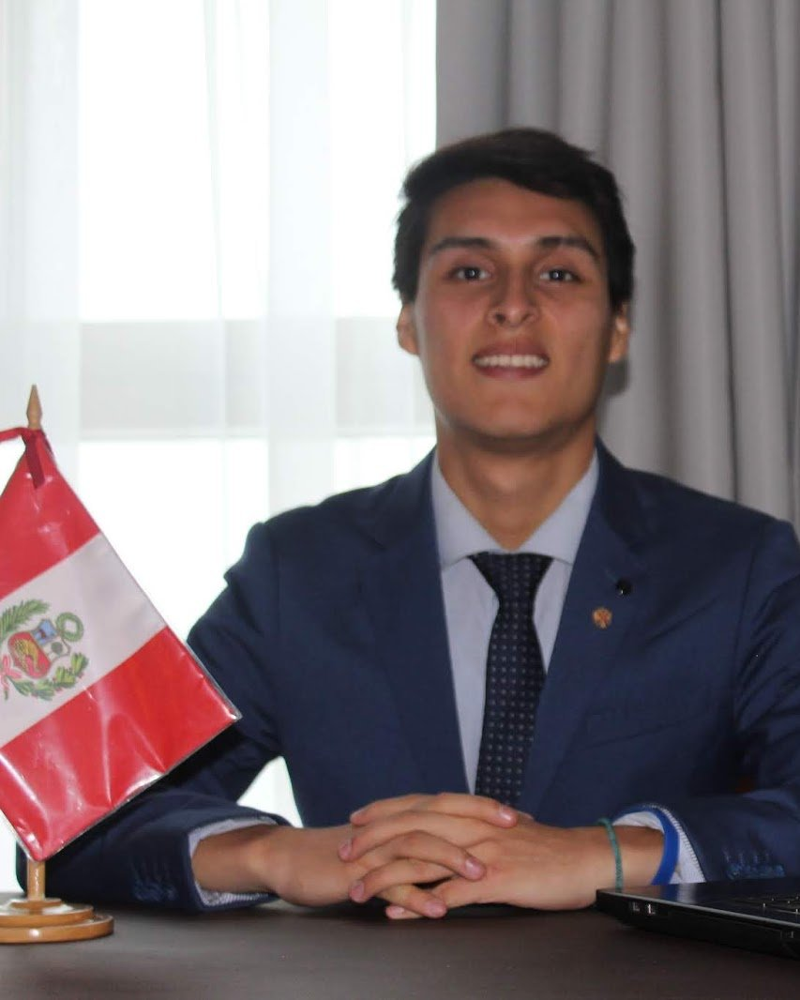
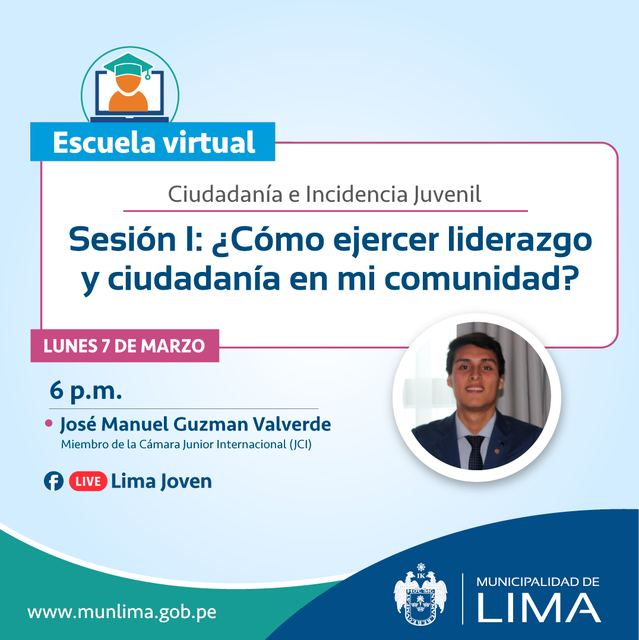

José Manuel Guzmán Valverde
Trabajo donde se cruzan la política electoral, la representación institucional y la tecnología cívica: herramientas para que la democracia funcione mejor y se entienda mejor.

Política, instituciones y tecnología
Soy politólogo por la Universidad Nacional Mayor de San Marcos. Fundé y dirijo POLITON — Fortaleciendo la Democracia, una consultora de innovación política que brinda servicios electorales a organizaciones políticas.
También construyo plataformas cívicas que acercan la información política a la ciudadanía, y comparto lo que aprendo en ponencias y clases.
- Ciencia Política · Universidad Nacional Mayor de San Marcos
- POLITON · fundador y director
- Asamblea Metropolitana de Lima · representante acreditado de la sociedad civil (2024–2026)
- Presupuesto Participativo de Lima Metropolitana · representante de las organizaciones de la sociedad civil (2022–2024)
- Ponente en congresos internacionales de comunicación política y ciencia política latinoamericana
- Contabilidad · estudiante en CERTUS
Participación ciudadana y representación
Espacios donde he representado a la sociedad civil y a las juventudes, y temas que sigo de cerca.
- 2024 – 2026Asamblea Metropolitana de Lima
Representante acreditado de la sociedad civil.
- 2022 – 2024Presupuesto Participativo de Lima Metropolitana
Elegido el 28 de noviembre de 2022 como representante de las organizaciones de la sociedad civil ante el equipo técnico del Presupuesto Participativo.
- 2023 – 2024Transparencia universitaria en San Marcos
Plataforma de rendición de cuentas de la UNMSM y seguimiento al Comité Electoral Universitario.
- 2022Foro de Juventudes hacia la IX Cumbre de las Américas
Participación en el espacio de juventudes previo a la Cumbre.
- 2020Parlamento Joven · Congreso de la República
Programa de formación y participación juvenil del Congreso.
- 2020Libre Razón
Bootcamp de formación de jóvenes líderes.
- 2018XIII Cumbre Mundial de Comunicación Política · Lima
Participante con la delegación peruana. Ese año también expuse en un congreso en Murcia sobre la subrepresentación de las juventudes.
Análisis recientes
El padrón inicial de la RENIEC para las elecciones regionales y municipales 2026
Qué dice la lista inicial del padrón y por qué importa revisarla.
Marzo 2026Planes de gobierno con inteligencia artificial · Elecciones Generales 2026
Qué partidos usaron más contenido generado con IA en sus planes de gobierno.
En los medios
- Audiencia vecinal en SJL: las diez preguntas que respondió el alcalde ante más de 350 personasEl Comercio
- Audiencias vecinales: las principales problemáticas de los vecinos de San Juan de LuriganchoEl Comercio
- Sanmarquino triunfó con idea innovadora en concurso nacional de IndecopiUniversidad Nacional Mayor de San Marcos
Encuentros, reconocimientos y viajes de formación
Toca una foto para verla en grande.


Estudios y cursos
Ciencia Política
Universidad Nacional Mayor de San Marcos
Maestría en Gobierno de Tecnologías de la Información
Posgrado
Contabilidad (carrera técnica)
CERTUS · en curso
- Diplomado en Comunicación Política, Opinión Pública y Campañas ElectoralesEscuela Electoral y de Gobernabilidad (ESEG) · JNE · 2020
- Programa de Formación de Líderes Políticos para la Democracia y GobernabilidadESEG · JNE · Fundación Hanns Seidel · 2020
- Gestión y Prevención de Conflictos Socio-ElectoralesESEG · JNE · 2020
- Asesoría PolíticaEscuela Complutense de Verano · Universidad Complutense de Madrid · 2020
- Incidencia Ciudadana en Políticas Públicas de JuventudesSecretaría Nacional de la Juventud (SENAJU) · 2022
- Programa de Formación ProfesionalALT · 2021
- Redacción de Artículos y Ensayos AcadémicosMunicipalidad de Lima · 2020
- Comprensión y Redacción de TextosUniversidad Tecnológica del Perú (UTP) · 2020
- RedesIDAT · 2020
- InglésBritánico · 2020
Lo que hago
Consultoría, plataformas cívicas y participación institucional.
Innovación política
POLITON acompaña a organizaciones políticas con servicios electorales y herramientas de comunicación.
politon.peTecnología cívica
Plataformas abiertas para seguir al Congreso y conocer a las candidaturas.
politica.pe/congresocandidatoelectoral.com
Representación institucional
Representante acreditado de la sociedad civil ante la Asamblea Metropolitana de Lima (2024–2026).
Últimas ponencias y clases
Cada ponencia se presenta desde aquí, en pantalla completa, con su PDF de respaldo.
Experiencia como ponente

- Lima: una mirada desde la juventudPresentación · 2025 · SlideShare
- La participación ciudadana en el Presupuesto Participativo 2024Presentación · SlideShare
- Rendición de cuentas como representante de la sociedad civilEquipo Técnico del Presupuesto Participativo de la Municipalidad de Lima · 2022–2024 · Scribd
- ¿Cómo ejercer liderazgo y ciudadanía en mi comunidad?Escuela virtual de Ciudadanía e Incidencia Juvenil · Lima Joven, Municipalidad de Lima · 2022
- Escuela virtual de Oratoria y LiderazgoMunicipalidad de Lima · abril de 2022
- Día de la Creatividad e InnovaciónPonente · abril de 2022
- Sesión de prototipado digital (POLITON)Albergue Casa Hogar Virgen del Carmen · abril de 2022
- Subrepresentación de las juventudesCongreso en Murcia, España · 2018